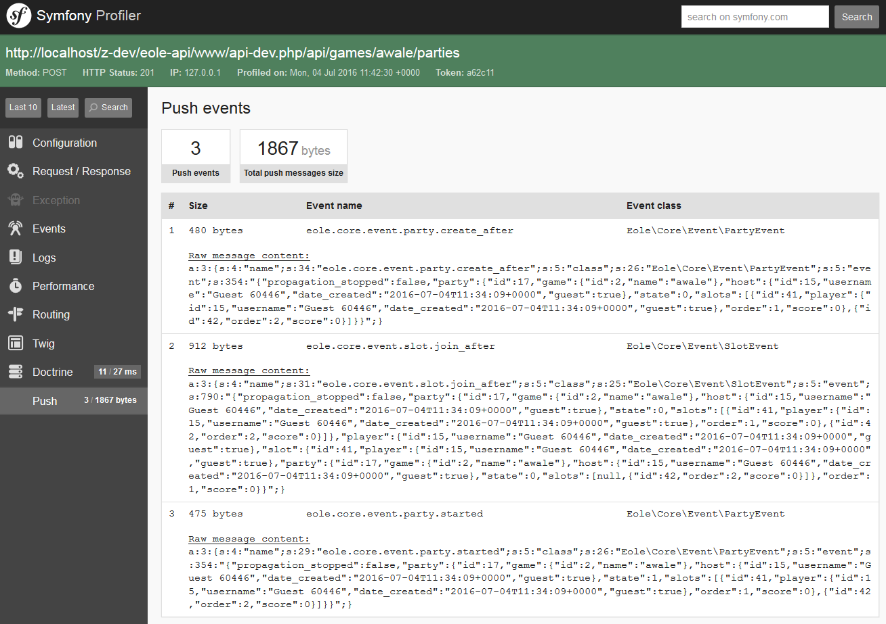

Push debug profiler
Sandstone integrates a development tool, the push debug profiler.
It logs all messages that has been sent to the websocket server during call to the rest api.

Enable the push debug profiler
Just register the profiler by adding:
$app->register(new Eole\Sandstone\Push\Debug\PushServerProfilerServiceProvider());
where $app is your Sandstone instance.
Note: It assumes you have installed the Symfony profiler in your Silex installation.
Usage
Once registered, a “Push” panel should appear in /_profiler.
This panel logs all messages with their content, size, event class and event name.
Note: Just refreshing an old panel won’t work. You must make a new request, then open it in with the profiler to see the “Push” panel.
Another note: There is no icon for the Push panel, I didn’t find one, so if you have an idea… :D